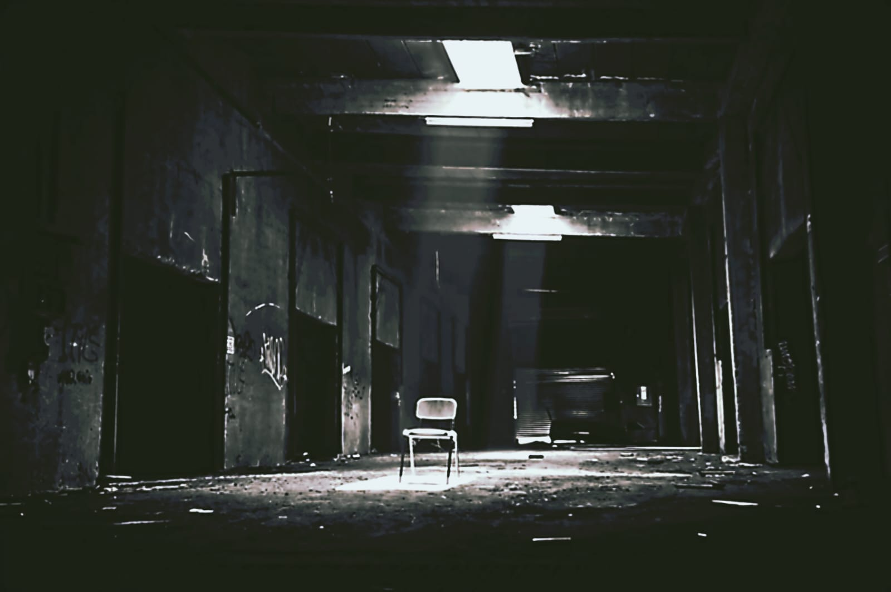
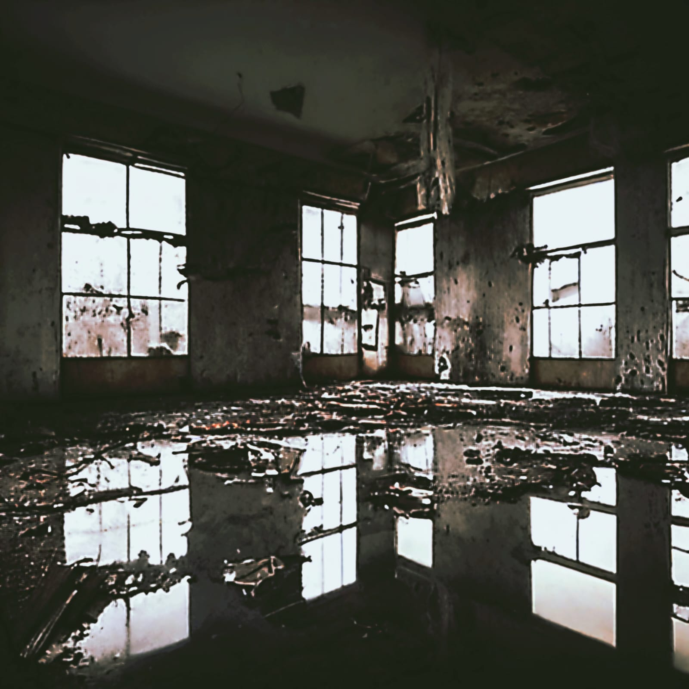

Sobre Erick Lacerda
Erick Lacerda foi o fundador da lendária My Toys, criada em 1973. Visionário e determinado, ele construiu uma fábrica que inovou no setor de brinquedos. No entanto, o destino foi cruel. Após sua morte em 1979, vítima de câncer de esôfago, a fábrica passou por transformações sombrias sob novos gestores. Dez anos após o fechamento da fábrica, o legado de Erick ainda ecoa nos corredores abandonados, guardando segredos sombrios e mistérios nunca resolvidos. É nesse contexto que nasce *O Terminal*, um ARG imersivo que o levará a explorar os limites entre realidade e ficção.
O que esperar?
Descubra documentos perdidos, vídeos enigmáticos e mensagens escondidas. Junte pistas, decifre códigos e desvenda o mistério por trás do legado de Erick Lacerda. Prepare-se para mergulhar em uma experiência inesquecível.
 